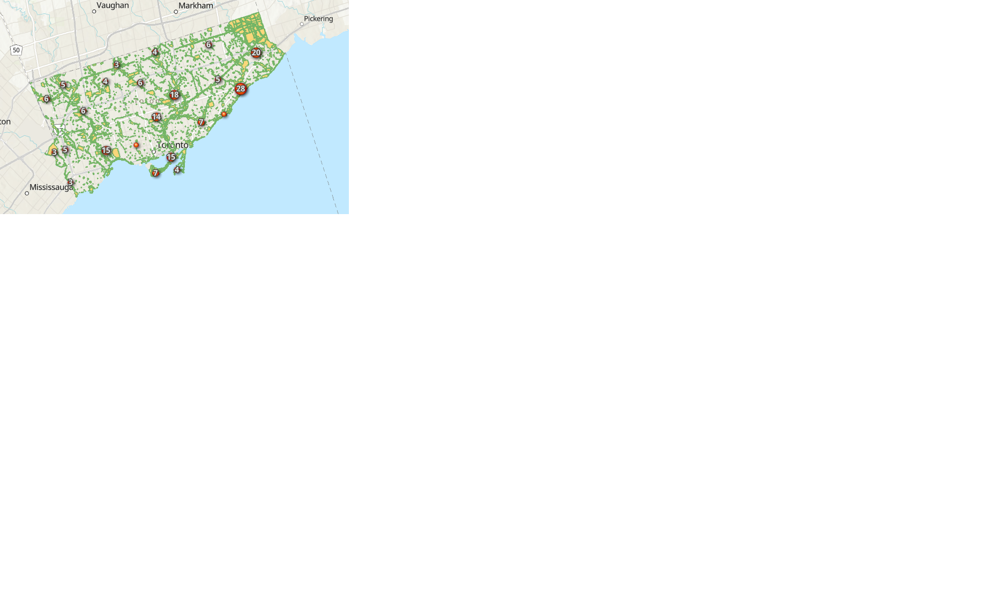

THE PROCESS.
Follow our team's journey towards our final solution! Our documentation process includes our technical skills, experiences, developments, comparisons and challenges we faced while working on the project. Please navigate the following links below to view to specific sections of the planning process.
MAPBOX MAPS.
Mapbox Studio.
Mapbox or better known as Mapbox Studio is a modern and adaptable service that allows users to design custom web maps for their mobile and web application needs.
The Good.
Through my own experience with Mapbox, it was interesting to see that they had an option for users to edit their own datasets within the platform. Personally, I decided to take advantage of this opportunity to experiment with the CSV file that hosted our group's data. I found it easy and remarkable to use, it had multiple options to delete unwanted layers, add new properties to the data and it was simple to undo a common mistake.
Creating a basic map with Mapbox was also a trouble-free hassle. It was interesting to find a multitude of options regarding cartography and how effortless the process of designing various colour schemes were. There were also possibilities for users to import their own text and image/symbology within the map. As well, I think it is important to note that Mapbox has developer friendly API and SDK within their platform, for anyone who wishes to use it to their own benefit.
The Bad.
Even though Mapbox has many fantastic quirks and tools, it is often not user-friendly if the person does not know how to code. There were sections within the platform, which I would have loved to explore, however it requires extensive coding background. Also, Mapbox still has a lack of technical guides for users on how to use or create numerous tools or different sections of the website.
I also found it quite interesting, that Mapbox subtly likes to market themselves as an open-source platform, however unfortunately they are not, except for their SDK and API being open source.
The Finale.
For one of the Mapbox Studio final solutions, click here. To view my step process towards the final solution, click here to be redirected to a PDF.
EXPERIENCE BUILDER.
Experience Builder runs in co-ordination with ArcGIS Online. Therefore to add the map in Expereince Builder, it is necessary to publish the hosted feature layers, web maps or web scene to the AGOL account. So we added the Parks of Toronto layer first and then created a web map using the Ticks data from 2015 to 2019. After that for 1st page, adding the introduction and the steps to follow the map, added in the webmap with all these data. Please click here to download the documentation pdf.
Interactive Map Page
The following screen capture shows that the map filter has kept on for 2016, 2017 and 2019 year. So the map feature numbers represent the total numbers of all the 3 years. We tried to add "Pie Chart" that compares the total numbers for each year and an "Embed" widget that links to the website URL of the parks when that features are clicked upon to this page but we were unsuccessful for that.
KOBO TOOLBOX.
This is an open-source survey form application which allows us to create survey forms which is approximately having 20 question types. The map question type was really easy to add, there was no need to do extra step as per our requirements, KoboToolbox had done that for us. The only problem faced here was after the deployment of the form to share the survey link which is accessible to public. But eventually it was resolved (by selecting open button as in the screen capture below) and added some records to check the performance.
Click here to open this form.
LEAFLET.
UFirst Roadblock: After merging all the csv into one, and sharing it as feature layer, then saving it as Map Services to call it through ArcGIS Rest API.We tried to change the symbology of the point and polygon layer within AGOL but the symbology would switch to default every time we tried calling the map with API. To navigate this, we finally decided to change the symbology with Leaflet instead of ESRI.  We did not have much information within the 2 layers to be able to show chart or any relevant information and as we were asked not to tamper along with base data itself, we decided to user hover function to display park name instead. .